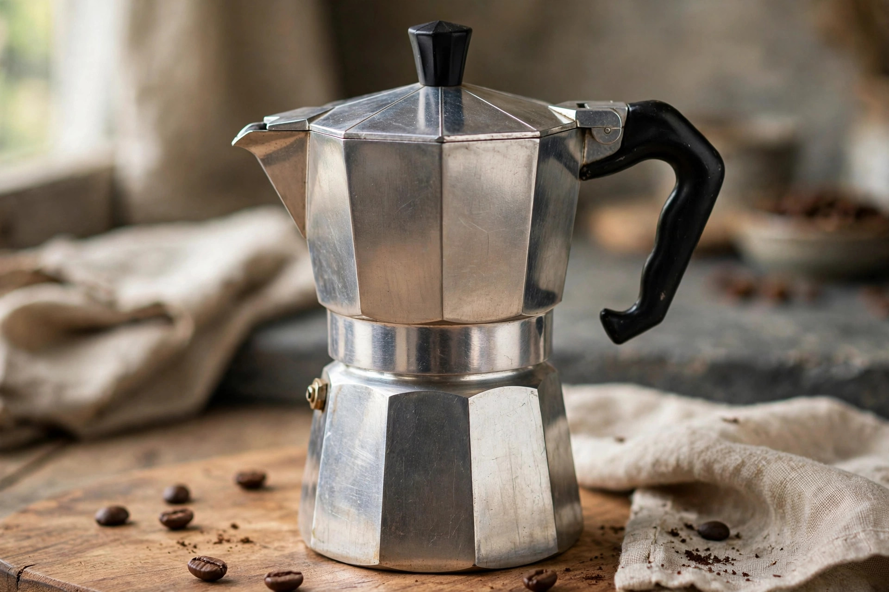

From Wikipedia, the free encyclopedia
| Moka pot | |
|---|---|
 | |
| Type | Stovetop coffee maker |
| Inventor | Alfonso Bialetti (1933) |
| Manufacturer | Bialetti (Moka Express) |
The moka pot is a stove-top or electric coffee maker that brews coffee by passing boiling water pressurised by steam through ground coffee. Named after the Yemeni port city of Mokha, it was patented in Italy in 1933 by Alfonso Bialetti; his company's Moka Express, with its distinctive octagonal aluminium body and Bakelite handle, became an icon of Italian industrial design.
The pot has three chambers: a bottom boiler, a funnel-shaped filter basket holding the grounds, and a top collecting chamber. As the water heats, steam pressure pushes it up through the coffee into the upper chamber. The resulting brew is rich and concentrated — stronger than drip coffee, though made at far lower pressure (about 1–2 bar) than pump espresso machines (about 9 bar).
The moka pot is found in the great majority of Italian households and throughout Latin America (where it is often called a cafetera). A Bialetti Moka Express is held in the permanent collection of New York's Museum of Modern Art. Renato Bialetti, who built the company into a global brand, famously had his ashes interred in a giant moka pot in 2016.